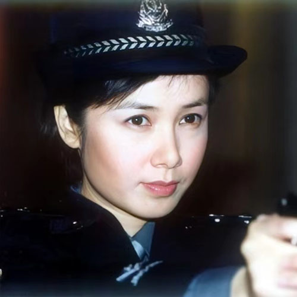
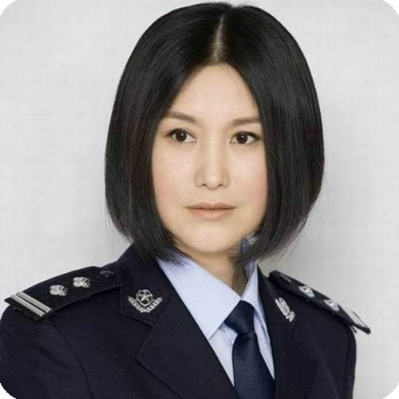
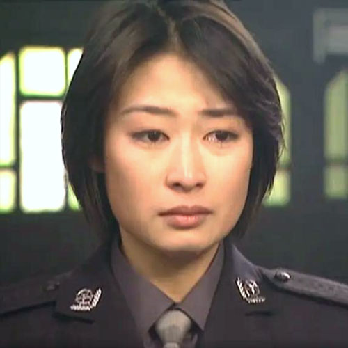
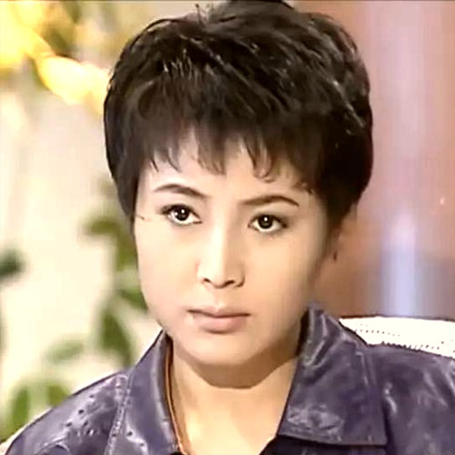
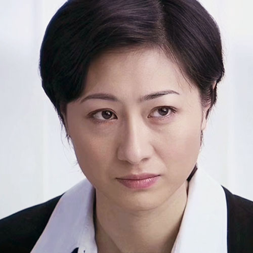
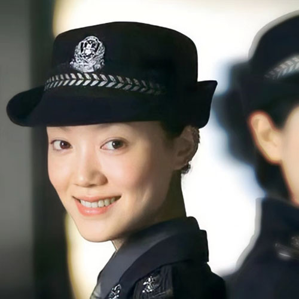
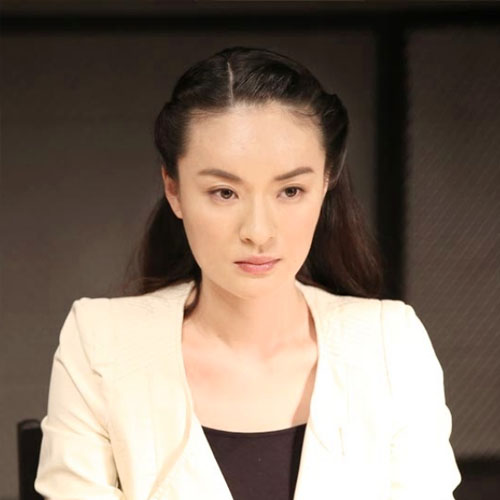
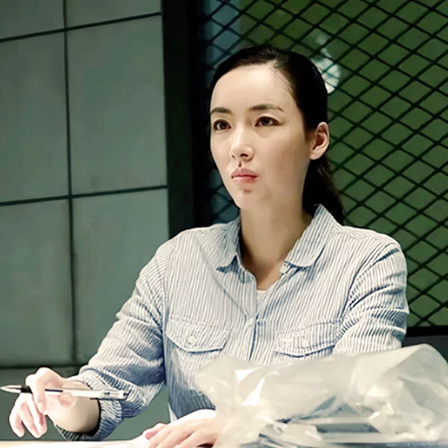
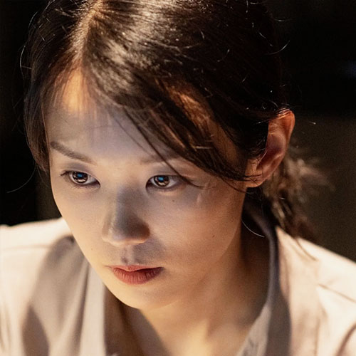

马倩
出自2000年播出的《红蜘蛛1：十个女囚的临终告白》。是个三陪小姐，跟自己的未婚夫到温州去发展，未婚夫生了一场大病，愈后囊中如洗，经人介绍认识了一个老板，二人将其灌醉后杀害分尸，同时将介绍人肖玫和龙芳也一并杀害，只劫得3000元。
剧集详情

汪静雯
出自2001年播出的《黑冰》。海洲大厦总经理/公安卧底。穿着色调柔和的套装，剪着前卫的短发，在与毒枭郭小鹏的对峙中，也不是一成不变的坚决。她有时也会怀疑自己的判断，有时又会为他惋惜，显示出一个警察高度纪律性的同时，还有作为女人的善感与真实。
剧集详情

季洁
出自2001年播出的《重案六组》。二级警督，是一名从警校毕业的警察，是警察队伍的中坚力量。季洁一直在刑警队工作。由于她机智干练，善于动脑筋，有实际工作经验，是个少有的女破案好手。原则性极强，嫉恶如仇，智勇双全、重情重义。重案系列最核心的人物，成熟稳重、严谨认真，心肠软，最看不得别人受苦，自己受伤但又坚忍着什么都不说。
剧集详情

龚倩
出自2001年播出的《黑洞》。天都市公安局刑警队一名实习警察，在侦破龙腾集团案件中数次辅助刑警队队长刘振汉取得重大进展，和副队王明将肖云柱移交给检察官时在地下停车库合伙开枪击毙龙腾集团杀手陆西明，在王明饮弹牺牲时悲痛难抑。后来实习警察届期圆满，调离刑警队。
剧集详情
朱琳
出自2002年播出的《绝对控制》。江城市人民医院实习医生，配合警方医治毒贩时对薛冰产生好感，还帮薛冰为海阳得了自闭症的妹妹联系医院，后因自己跟薛冰的性格差异太大，拒绝了薛冰的求婚，最后踏上了援藏的道路。
剧集详情

徐若风
出自2002年播出的《情有千千劫》。刑警队队长，曾经和男主角迟鸣有过一段恋情，但因一场误会而和他分道扬镳。后来成为了他的顶头上司，带领刑警队最终破获了连环复仇案，并与男主角解除误会最终走到一起。
剧集详情
周箐芳
出自2003年播出的《水落石出2》。重案组侦察员。在古园村文物盗窃大案的侦查中，周菁芳和男主角纳净云意外发现其男友陈朴也涉及此案，而且他还设法利用周菁芳获得了自己想要的东西。他们将陈朴抓捕归案，周菁芳也和陈朴就此彻底分道扬镳。纳净云含冤入狱时周菁芳为救他四处奔走，最终两人走到一起。
剧集详情
李丽
出自2003年播出的《征服》。房地产公司老总李丽，这是一个生活在痛苦之中的美丽女人，她的妹妹跟随了黑道人物做情人，她又是这一切悲剧的罪魁祸手，她想扭转局势，可惜为时已晚，并且事情越弄越糟，不可遏制，她只有铤而走险。
剧集详情

李景岚
出自2004年播出的《案发现场》。刑警队法医，警衔为二级警督。她业务精湛，知性温柔清冷又很坚韧，但不苟言笑，令人敬而远之。曾有极相爱的男友，是大学同学。后男友去法国，分手导致情感受伤，至今不论婚嫁。她的信条是：“死人不说谎。”
剧集详情

叶小晶
出自2004年播出的《沉默的证人》。起初她是个敏感脆弱的女子，为了她父亲九年前的冤案一直生活在抑郁里，她又同时有一种坚强，9年来坚持不懈去找那个造成她父亲的含冤受辱的始作俑者。虽然她知道没用，但她也一直都在坚持。她很敬业，为了自己的法医职业付出了很多很多。
剧集详情
周欣
出自2008年播出的《刻不容缓》。周欣被黑道头目蒋红兵侵犯，她留在他身边展开疯狂报复。明知道蒋红兵想要一个跟自己的孩子，她仍然选择流产四次惹怒他。但蒋红兵痴心不改，对周欣爱意如初，让她在爱与恨之间纠缠。在蒋红兵被刑侦队长罗军围剿，罗军答应蒋红兵不惩罚周欣之时，周欣却选择陪在蒋红兵身边，最终举枪自杀。
剧集详情
穆剑云
出自2014年播出的《暗黑者》。专业的心理学博士，是一位爱美精致又气场超强的时尚达人，要强又做事利落，对邋遢无品的男人深恶痛绝，因此在进入专案组后对罗飞不屑一顾。在逐渐了解到罗飞优点之后开始自我提醒，无奈最终还是喜欢上了自己最讨厌的人。
剧集详情

于慧
出自2014年播出的《湄公河大案》。女缉毒警察，缉毒情报科科长，高野的妻子。性格内敛、沉默，具有领袖气质，她对事业饱含热情，对朋友饱含情义。从基层一步步做到高层的女缉毒警察，她美丽动人、气质不凡，在案件的侦破过程中分析能力强。剧中担当“卧底”，潜入贩毒集团辅助破案。
剧集详情

邱冰
出自2015年播出的《刑警队长》。一位高度热血的女刑警，也是刑警队长顾铭的得意弟子。她坚韧果敢，无惧危险，时时冲锋在战斗一线。当她还在警校学习的时候在一次休假时间里，她因为追捕小偷而令自己年幼的妹妹被人贩拐走，母亲也因受此刺激突发顽疾不久于人世，致使她开始加入刑警队时仍然带着难以释怀的心结，时常因为失掉信心而不断陷入自我怨怼中，而在与顾铭的长期相处中，她逐渐感悟到了成长和责任，理解了刑警真正的灵魂和信念。
剧集详情
朱慧如
出自2017年播出的《无证之罪》。天生丽质的她从小就被各路混混追求，每天都活在骚扰和斗殴中，因为有哥哥朱福来的保护没有人再敢骚扰她了。但是哥哥因为惹上仇家被打成残疾，她为了筹措医药费而不得已牺牲自己的身体做了孙红运的情人。孙红运的死，让她一路牵扯进各种离奇案件中。
剧集详情
周舒桐
出自2017年播出的《白夜追凶》。22岁，警校毕业的大学生，被分配到刑侦一线进行外勤工作的女刑警。她有着强烈的学习欲望，是副支队长刘长永的女儿。被周巡安排在关宏峰身边当助手，实则是安插在关宏峰身边的眼线。
剧集详情
夏静怡
出自2020年播出的《三叉戟》。因公牺牲的人民警察夏春生的女儿，美国留学高材生，没有一点思想觉悟。刚毕业回国，就被招入金融公司。初到公司即配车配房，还有高工资福利。黄有发对她委以重任，实则利用她来当挡箭牌，逃避“三叉戟”的调查。而她也被金钱和权力蒙蔽了双眼，飘飘然不知所以。在阴谋浮现之际，她最终意识到了自己的浮躁与傲慢。
剧集详情

张晓倩
出自2020年播出的《沉默的真相》。《江潭晚报》的记者，卡恩集团性贿赂案件的受害者之一，曾用名李雪。长大后改名换姓希望过上新的生活，但最终选择帮助检察官江阳等人揭开事实真相，其故事线是剧集原创的重要暗线。
剧集详情
何溶月
出自2022年播出的《猎罪图鉴》。北江分局刑警队员，是一个正直果敢，专业技能非常强的女法医。她胆大心细，在调查的时候，总是会察觉一些不易发现的真相。她协助杜城和沈翊发现了很多细节，也查出了许多很难破解的案件。她对人体的结构特别的了解，为破案做出了很多的贡献。她一直都很欣赏沈翊，平时在办理案件的时候，有意无意也会看向沈翊。
剧集详情
孟钰
出自2023年播出的《狂飙》。孟德海的女儿，和安欣是青梅竹马，性格开朗、有主见。读研后离开京海市前往北京，开始从事记者工作。帮助安欣卧底过很多次，和安欣互相之间都有好感，原本要在一起，却因为黑恶势力影响面太大，安欣不得已和她分手。后因为赌气，和原禁毒支队队长杨健结婚，并育有一个孩子“豆豆”。
剧集详情